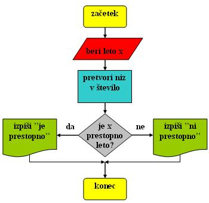
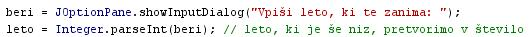
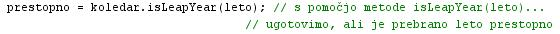
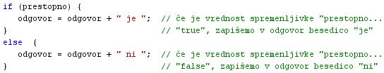
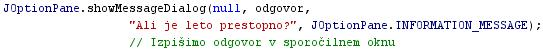
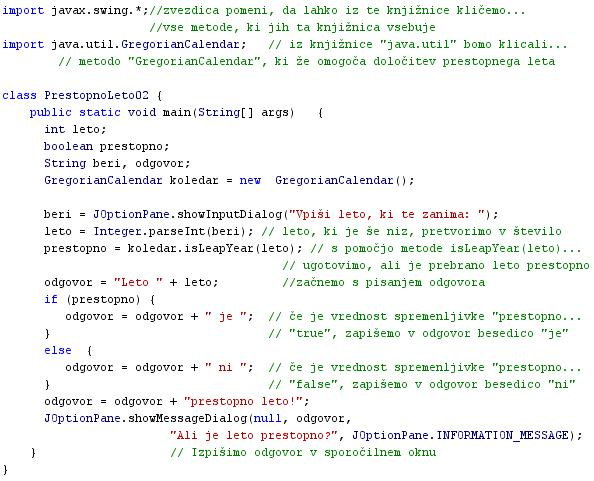

NAÈINI PREDSTAVITVE ALI PODAJANJA ALGORITMOV
- Algoritme lahko predstavimo na razliène naèine:
- Besedni opis problema in rešitve.
- Èe problem opišemo tako, kot ga razumemo, in z besedami, ki jih poznamo, je problem že nekoliko bolj jasen.
- Tudi zamišljeno rešitev problema lahko opišemo z besedami v obliki stavkov.
- Prva težava besednih opisov problemov je ta, da ljudje razlièno razumemo pomene posameznih besed, pa tudi pomene stavkov oziroma sporoèil kot celote.
- Druga težava je nenatanèna doloèitev zaporedja korakov reševanja problema pri besednem opisu.
- To dejstvo je vzrok mnogih nejasnosti, ki spremljajo tak naèin predstavitve algoritma.
- Nejasnosti so lahko vzrok za nesporazume in napake pri reševanju problemov.
- Primer "Prestopno leto":Napiši program, ki prebere letnico ter ugotovi, ali je prebrano leto tudi prestopno leto. Vprašamo se, kaj vse bomo morali postoriti za rešitev problema in to opišemo v nekaj stavkih.
- Prebrati moramo eno število - letnico, za katero nas zanima, èe je to prestopno leto.
- Prebrani podatek, ki je podatkovni tip "niz", moramo pretvoriti v število.
- Ugotoviti moramo, ali je prebrano leto prestopno.
- Izpisati moramo odgovor.
- Psevdokoda
- Psevdokoda je strukturirani naèin predstavitve algoritma.
- Stukturiranost psevdokode je odgovor na problem podajanja algoritma z besednim opisom problema in rešitve.
- Strukturiranost psevdokode pomeni, da so pomeni posameznih besed v kodi natanèno doloèeni in dogovorjeni.
- Strukturiranost psevdokode pomeni, da je zaporedje korakov reševanja problema natanèno doloèeno.
- Predpona "psevdo" v sestavljanki "psevdokoda" pomeni "lažno" ali "navidezno".
- Psevdo koda je navidezna koda, saj poskuša oponašati pravo kodo programskih jezikov.
- Primer "Prestopno leto": Pri opisovanju problema si pomagamo z besedami, ki spominjajo na ukaze programskega jezika:
- beri letnico x;
- pretvori niz v število;
- ugotovi, èe je letnica x prestopno leto;
- piši rezultat;
- Diagram poteka
- Diagram poteka je grafièni strukturirani naèin predstavitve algoritma.
- Pridevnik "grafièni" pomeni, da gre za risbo ali sliko.
- Stukturiranost diagrama poteka je odgovor na problem podajanja algoritma z besednim opisom problema in rešitve.
- Strukturiranost diagrama poteka pomeni, da so pomeni posameznih simbolov v diagramu natanèno doloèeni in dogovorjeni.
- Strukturiranost diagrama poteka pomeni, da je potek reševanja problema v diagramu poteka natanèno doloèen in dogovorjen.
- Primer "Prestopno leto": Ukaze psevdokode zamenjajo simboli posameznih korakov algoritma

- Program (raèunalniški programi)
- Raèunalniški programi so opisi reševanja problema v programskem jeziku.
- Programski jezik je v primerjavi s èloveškimi jeziki veliko bolj natanèno doloèen.
- Pomeni posameznih besed oziroma ukazov so tako natanèno doloèeni, da ima vsak ukaz natanko en sam pomen.
- Veda, ki se ukvarja s pomeni simbolov v komunikaciji, se imenuje semantika.
- Pravila, po katerih pripisujemo pomene posameznim simbolom, imenujemo semantièna pravila.
- Semantièna pravila so pri programskih jezikih veliko bolj natanèna in stroga kot pri èloveških jezikih.
- Pravila sestavljanja stavkov v raèunalniških programih so tudi karseda natanèna.
- Ta pravila skladnje stavkov imenujemo sintaksa.
- Sintaksa je pri programskih jezikih veliko bolj stroga kot pri èloveških jezikih.
- Èe se v stavek programa prikrade ena sama najmanjša nepaka, program ne bo deloval.
- Primer "Prestopno leto": Problem opišemo kar s programom v programskem jeziku Java.
- prebrati leto in pretvoriti prebrano leto, ki je še niz, v število - to storimo z metodo "Integer.parseInt(spremenljivka)";
- preveriti ali so pogoji za prestopno leto izpolnjeni - to storimo z metodo "GregorianCalendar().isLeapYear()"
- sprejemanje odloèitve, ali gre za prestopno leto - to storimo s stavkom "if-else"
- izpis rezultata z metodo "JOptionPane.showMessageDialog()"
VAJA 33:
- V okolju za pisanje izvorne kode v jeziku Java, za prevajanje in za interaktivno delo zapiši zgornji program "PrestopnoLeto02". Pomagaj si s sliko.
- Kodo lahko tudi kopiraš iz te datoteke in jo prilepiš v okolje, v katerem pišeš programèke. Pozor: koda, ki jo boš kopiral/a, vsebuje eno, dve, tri ali štiri napake. Èe želiš, da bo program deloval, moraš napake odkriti in jih odpraviti.
- Izvorno kodo shrani pod imenom "ImePriimek33.java". ImePriimek je seveda tvoje lastno ime in priimek.
- Datoteko "ImePriimek33.java" prevedi.
- Prevedeno datoteko zaženi, preveri rezultat v interaktivnem oknu in poklièi profesorja, da vidi rezultat.
- Preriši diagram poteka v tej uèni enoti v zvezek.
1. Vprašanja:
1. Naštej naèine podajanja algoritmov?
2. Kateri naèin podajanja algoritmov je najmanj natanèen in dopušèa najveè možnosti za nesporazum?
3. Kaj je psevdokoda?
4. Kaj pomeni predpona "psevdo"?
5. Kaj je diagram poteka?
6. Kaj je semantika?
7. Kaj je sintaksa?
8. Zapiši knjižnico, ki smo jo spoznali v vaji te uène enote.
9. Zapiši novo metodo, ki smo jo spoznali v tej uèni enoti.
10. Koliko korakov vsebuje algoritem, ki smo ga obravnavali v tej uèni enoti?
2. Zapiši od ene do pet kljuènih besed, ki povzemajo vsebino te uène enote.
3. Povezave do dodatnih informacij.
Gradiva na spletnih straneh fakultete za matematiko in fiziko v Ljubljani - prvi vir.
Gradiva na spletnih straneh fakultete za matematiko in fiziko v Ljubljani - drugi vir.
Spletni priroènik proizvajalca programskega okolja Java. To je podjetje Sun.
|